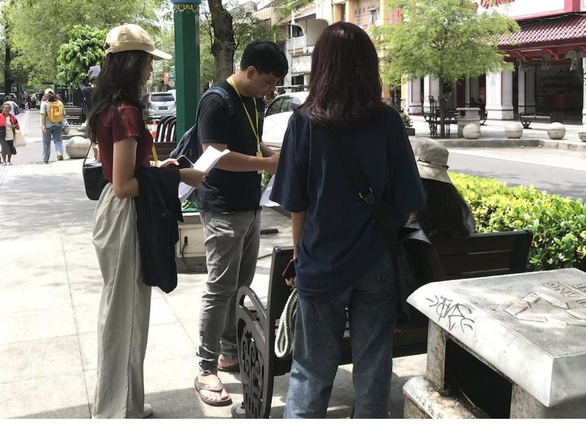

Before you read: take a guess
Which of these best predicts whether a Malioboro merchant offers digital payment?
Competition. Pressure from nearby businesses multiplies the odds by 2.75, while customer demand has no detectable effect.
Executive summary
Merchants on Malioboro take up digital payment when their competitors do. Among 75 merchants on Jalan Malioboro and in Pasar Beringharjo, a one standard deviation rise in competitive pressure multiplies the odds of offering digital payment by 2.75. The same rise in facilities and skills multiplies them by 2.66. Customer demand shows no significant effect, with an odds ratio of 0.76.
Digital payment was already common when the team surveyed the area in January 2023. Some 73.3 percent of customers and 68 percent of merchants used it, and QRIS was the most popular method in both groups.
Capacity separates the merchants who use it from those who do not. Among merchant users, 88.2 percent had finished senior secondary school, against 50 percent of non-users, and users had up to twice the access to the phones and credit that the service requires.
But the study rests on 75 merchants reached by convenience sampling, and the confidence intervals are wide. The results fit a story of imitation among neighbouring stalls without proving it.
Three surveys, three provinces
PENSAR field sites from 2023 to 2025. Each stop opens that year's report.

_-_img_06.jpg){kind=link}
How the study works
 One busy shopping streetJalan Malioboro and Pasar Beringharjo
One busy shopping streetJalan Malioboro and Pasar Beringharjo Both sides are surveyed75 merchants and 75 customers
Both sides are surveyed75 merchants and 75 customers Pairs work the zones32 people in 16 pairs across four zones
Pairs work the zones32 people in 16 pairs across four zones Adoption is modelledSeparate logistic regressions for each side
Adoption is modelledSeparate logistic regressions for each side
The question
Small firms are central to the Yogyakarta economy, and Bank Indonesia wants them to move to digital records. The province counted 324,000 micro, small, and medium enterprises in 2022, up from 230,000 in 2015. Lenders complain that few of them keep transaction records, and digital payment is one route to creating those records.
Most research on adoption looks at consumers, often young ones. Yet a payment system needs both sides, and 34 percent of Yogyakarta's population is 45 or older, so studying merchants and customers in one market shows whether merchants respond to customers or to something else.
The study asks what drives adoption by customers, what drives adoption by merchants, and whether customer demand links the two.
Data and method
The survey covered Jalan Malioboro, which is divided into four marked zones, along with Teras Malioboro 1 and 2 and Pasar Beringharjo. Its 32 participants worked in 16 pairs, each with a daily target of three customers and three merchants, and they approached the people who met the criteria and were easiest to reach, whether owners or employees on the merchant side.
Two questionnaires drew on the technology acceptance model and the unified theory of acceptance and use of technology. Each construct was measured with four or five Likert items, which were averaged and then standardised. The dependent variable in each logistic regression is whether the respondent uses or offers digital payment, and the models add education, gender, and age in turn.
Findings
Two factors predict merchant adoption. The first is mimetic pressure, because merchants who see nearby users as better regarded and better selling are more likely to adopt, and the second is capacity, measured by facilities and skills, and both stay significant after controls. Goods along Malioboro are similar and stalls stand side by side, which may explain why merchants watch each other so closely.
Customer demand does not appear to drive adoption
Merchants did not report adopting because customers asked. The estimate is insignificant and below one, which differs from Ligon and co-authors' (2019) result for merchants in Jaipur, India. The report suggests that context explains the gap, including local technology use and the structure of small business.
Users have the phones and the skills
Merchants who use digital payment had up to twice the access to phones and credit that non-users had. They were also more comfortable with transacting by phone, opening email, and downloading files. Fashion sellers were the largest group among users, and food sellers among non-users.
| Finished senior secondary school or above | Users | Non-users |
|---|---|---|
| Customers | 96.4% | 75.0% |
| Merchants | 88.2% | 50.0% |
The customer model is less settled
Results for customers are harder to read than those for merchants. Perceived ease of use is significant in the full model, with an odds ratio of 5.87, and customers are mostly young: Generation Z dominates that side of the sample. But behavioural intention loses significance once controls enter, and the odds ratios for education and gender are too large to trust on 75 respondents. This page therefore rests its conclusions on the merchant model.
From the field

Surveying a tourist street depends on trust as much as on the questionnaire. Each pair carried a consent form, a permit letter from the city licensing office, and student identification on a lanyard, and showed them before starting. Respondents received cooking oil and instant noodles as thanks.
Policy implications
- Offer practical training. Bank Indonesia and financial institutions could run programmes on the benefits of digital payment and on how to use it in daily operations.
- Let merchants learn from each other. Since merchants follow their neighbours, a platform for sharing experience, led by the Ministry of Cooperatives and SMEs, could speed adoption.
- Lower the cost of starting. Subsidies for equipment or tax incentives would address the capacity barrier, and providers could design simpler and cheaper products for small firms.
- Protect users. The Financial Services Authority (OJK) could lead awareness campaigns on transaction security and fraud.
Limitations
The sample is small and comes from one tourist corridor, so the results do not represent Yogyakarta's small firms as a whole. Convenience sampling favours people who were available and willing, and merchant respondents include employees as well as owners. A single survey round cannot show that competition causes adoption. Customer and merchant samples were also drawn separately, so the study cannot match a customer to the merchants they use.
My role
I was one of the enumerators for PENSAR 2023, the yearly field study of Kanopi FEB UI. The report is team work by the society's research division, and this page is my own summary of it.
How to cite
Research Division, Kanopi FEB UI. (2023). Determinants of Digital Payments Use in MSMEs: Evidence from Yogyakarta. Penelitian Besar 2023. Faculty of Economics and Business, Universitas Indonesia.
Download the report (PDF, 36 pages, 5 MB, in Indonesian)